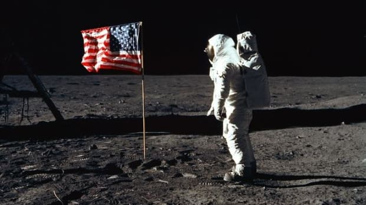

NASA was created largely in response to the Soviet launching of Sputnik in 1957. It was organized around the National Advisory Committee for Aeronautics (NACA), which had been created by Congress in 1915. NASA’s organization was well under way by the early years of Pres. John F. Kennedy’s administration when he proposed that the United States put a man on the Moon by the end of the 1960s. To that end, the Apollo program was designed, and in 1969 the U.S. astronaut Neil Armstrong became the first person on the Moon. Later, uncrewed programs—such as Viking, Mariner, Voyager, and Galileo—explored other bodies of the solar system.
NASA was also responsible for the development and launching of a number of satellites with Earth applications, such as Landsat, a series of satellites designed to collect information on natural resources and other Earth features; communications satellites; and weather satellites. It also planned and developed the space shuttle, a reusable vehicle capable of carrying out missions that could not be conducted with conventional spacecraft.
Apollo 11
Apollo 11 was the first manned mission to land on the Moon. The first steps by humans on another planetary body were taken by Neil Armstrong and Buzz Aldrin on July 20, 1969. The astronauts also returned to Earth the first samples from another planetary body.
